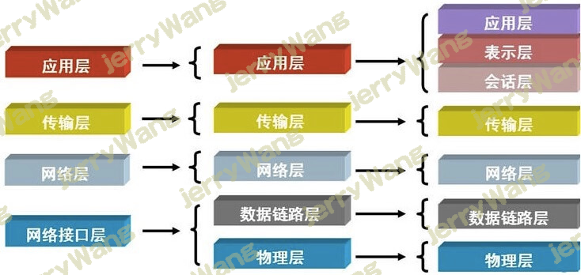
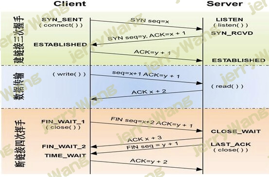

计算机网络知识的简单介绍
网络基础
1.网络指的是什么？
计算机与计算机之间通过物理链接介质（网络设备）连接到一起。
计算机与计算机之间基于网络协议通信（网络协议就相当于计算机界的英语）
2.osi七层协议：
互联网协议按照功能不同分为osi七层或tcp/ip五层或tcp/ip四层

每层运行常见物理设备：
3.五层模型讲解
物理层：由来：计算机和计算机之间要想通信，就必须接入internet，言外之意就是计算机之间必须完成组网。
功能：主要基于电器特性发送高低电压，高电压对应数字1，低电压对应数字0（提供电信号）
数据链路层：
1.由来：单纯的电信号0和1没有任何意义，必须规定电信号多少位
2.功能：定义了电信号的分组方式
3.以太网协议ethernet:早期的时候各个公司都有自己的分组方式，后来形成了统一的标准，即以太网协议ethernet
4.以太网协议ethernet规定：
1.一组电信号构成一个数据包，叫做“帧”
2.每一数据帧分成：报头head和数据data两部分
head包含：发送者/源地址，6个字节
接受者/目标地址，6个字节
数据类型：6个字节
data包含：数据包的具体内容（最短64字节，最长1500字节）
5.mac地址：ethernet规定接入internet的设备都必须具备网卡，发送端和接收端的地址便是指网卡的地址，即mac地址。
6.广播：有了mac地址，同一网络内的两台机器就可以通信了（一台主机通过arpmac协议获取另外一台主机的mac地址）
网络层：
1.由来：有了ethernet，mac地址，广播的发送方式，计算机与计算机之间就可以通信了，问题是世界范围的互联网由一个个彼此隔离的小的局域网组成的，那么发送一条消息全世界都能收到，这样会导致效率很低了。所以，必须找到一种方法来区分计算机是在局域网还是不在局域网里。如果在同一个局域网里，就采用广播的方式发送，如果不是，就采用路由的方式。
2.功能：引入一套新的地址用来区分不同的广播域/子网，这套地址即网络地址。
3. IP地址：规定网络地址的协议叫ip地址，广泛采用V4版本即ipv4，它规定网络地址由32位二进制表示
范围：0.0.0.0-255.255.255.255
一个ip地址通常写成四段十进制数，例：172.16.10.1
4.子网掩码：所谓”子网掩码”，就是表示子网络特征的一个参数。它在形式上等同于IP地址，也是一个32位二进制数字，它的网络部分全部为1，主机部分全部为0。比如，IP地址172.16.10.1，如果已知网络部分是前24位，主机部分是后8位，那么子网络掩码就是11111111.11111111.11111111.00000000，写成十进制就是255.255.255.0。
知道”子网掩码”，我们就能判断，任意两个IP地址是否处在同一个子网络。方法是将两个IP地址与子网掩码分别进行AND运算（两个数位都为1，运算结果为1，否则为0），然后比较结果是否相同，如果是的话，就表明它们在同一个子网络中，否则就不是。
5.arp协议：就是讲IP地址解析成mac地址。
传输层：
1. 由来：我们通过ip地址和mac地址找到了一台特定的主机，如何标识这台主机上的应用程序，答案就是端口。端口即应用程序与网卡关联的编号。
2. 功能：建立端口到端口的通信。
3.TCP：通过双向链接，客户端向服务端发送消息后，等待服务端回复消息后才算发送成功。
缺点：速度慢
优点：可靠（可靠在对方要回应一个包确保发送成功）
4.UDP： 没有链接，直接发送。
缺点：不可靠
优点：速度快
5.三次握手（连接）和四次挥手（断开）：
三次握手的目的：建立双向通信链路。SYN代表客户端向服务端发送的一个请求，ACK代表服务端向客户端发送的回应。
三次握手就像谈恋爱确定关系一样，四次挥手就像分手一样。此处只是打比方而已。

应用层：
由来：用户使用的都是应用程序，均工作于应用层，互联网是开发的，大家都可以开发自己的应用程序，数据多种多样，必须规定好数据的组织形式
功能：规定应用程序的数据格式。
URI（uri）地址:例如
https://www.cnblogs.com/moyand
以上网址有三部分构成：
协议部分：https:// 应用层的协议
资源：moyand
 微信
微信 支付宝
支付宝